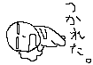
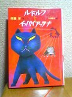
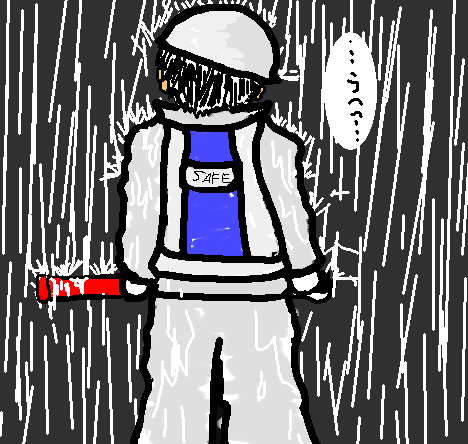
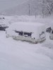
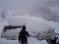

{kind=link}
{kind=link}



試験、終了しました。
色々書きたいのですが…もうちょい待ってください。
ねむったい、、、
んがーぁあ(イビキ
あー
明日は国家試験を受けにいきます。
むー
友達んちに行って悪あがきしてくるかねー。
一応自分でもやってたんだが、、、
なんしかピントがずれてる俺の事だ。
絶対とんでも無い所ばっか勉強してたんだろうなーとか思いつつ。
有意義な時間を過ごしてやろうじゃないのヽ(`Д´)ﾉ
という心意気で行って来ます。
あーもう。
疲れたよ（ぁあ
ワタシ警備員ネ。チョトお前らに伝えたい事がアルヨ。
別にね、意地悪で通行止めにしてるわけじゃねーんだよ！
予告受けてない？
ワタシその辺の住人じゃないんだから、知らんがな、もう
アクセルふかして煽るんじゃねーヽ(`д´)ﾉ
ガソリン消費しろあほーヽ(`д´)ﾉ
…ふぅ( ﾟ∞ﾟ)=3
すっきりした。
明日もガンバロー
ｵﾜﾙ
突然、【ルドルフとイッパイアッテナ】って本が読みたくなってしまった。
なぜならここの漫画を読んだから。
TOP絵のイッパイアッテナの禍々しさに驚く無かれ。
面白さの裏には感動するストーリーが秘められているのです。
はにゃん(･∀･)♪
っつーわけで。
借りてきちゃいました  うむっ
ほんと、自分の興味のある事は行動が早いなーと、自分でもあきれる。
あー、最近また活字に飢えてきた。
そんなもん読んでる暇ねーのに。
快感や快楽を求めて好き勝手行動してしまう俺。
光に集まる昆虫かっつーの。
もうちょっと自制しろ、と('`)
嗚呼…しかしそれでも本が読みたい。
今はアクションスクリプトの本が欲しいな。
でも、まだこれといってドンピシャな本が見つからないんだよね。
知識を、、、もっと知識をををを
ｵﾜﾙ
現在、DVDとかゲーム機とかフラッシュメモリとか、規格が乱立してますよね。
でも実際にはどれも使い勝手は変わらない。
我々ユーザーはどれを選んだらいいのか…。もー、わけ不明ですよね。
そんな時俺は、慌てず騒がず10年後を見るようにしています。あー5年後でもいいかな。
それぐらい経てばもっと汎用性の高いものがあるだろう、と。
最近のIT事情は、ちょっと昔…そう、5年程前と比べるだけでも当時では信じられないような技術が当たり前の様に存在してるわけですよ。
CPU 3Ghzオーバーのノートパソコンをコタツの上で使うとか。
カセットテープかレコードかCDか、昔は大変な争いをしていたらしいけど、結局は手軽で便利なCDへと自然に移行していきましたよね。
そう、自然淘汰。
そんな感じでさ、現在の乱立規格も自然と一つに集約していくような事にならないかしらね。
つまり、今がその過程の中にあるんだって考え方です。
「今話題の20テラバイトディスク！テレビ、ゲームもみんなこのメディアに保存できます！しかも読み出すハードは選びません！ビデオ、音楽プレイヤー、パソコン、カメラ、ゲーム。すーべーてーこのディスクから読み出せます！」
みたいな。
ジャパネット辺りで。
「しかも今ならもう一枚つけて19,800円！手数料などは当じゃｐ(ry」
…何年後の話だ('`)
だけどいつの時代でも最強のデバイスは脳みそ。
機械が、なにか新しいモノを創造出来るチカラを得る事は、何年経っても不可能だと思います。
例え機械が何かを作り出したとしても、所詮それは人の手によって打ち込まれたプログラムのひとつ。
その事実が存在する限り、機械は人間を超える事は出来ないのです。
悔しかったら、人並みの頭脳を持つロボットでも作ってみやがれ、と。
うん。確かにそれはすごい技術だ。
だがしかし
俺の脳みそは4bit。ゲームボーイ並。
何年経っても時代遅れ。
あばばば
あ、今すごい事思いついた。
機械が、人並みの頭脳の思考ルーチンを沢山開発して、それらを並列コンピューターみたいに自動で集約、そしてお得意の超連続計算。そうする事によって沢山の人間が集まって知恵を出し合うみたいにファジー機能が強く働き、人間には思いつく事の出来ない、まさしく機械ならではの発想が生まれたりする技術。
うわっ、こわっ（ぁ
絵でなんでも自由に表現できたらいいのになって思う。
や、どうも俺の絵は抽象的すぎるらしいんですわ。
特徴はわかるけど…絵としてはどうよ？っみたいな。
そりゃあお手本とまったく同じ絵が描けるとしても、そんなのわざわざ描く事もないし、コピーで済むし。
だから多少なりともオリジナリティーが必要なわけです。
ってゆーか俺の絵は時々、元がなんなのかわからない様になったりするからね('`)
いや、つまりさ。
だらだら文章を書くよりも、ぱっと絵を見ただけで「ふふっ」とか「うむ」とかゆー反応が得られる方が手間がかからないって事。
別に文章書くのは嫌いじゃないんですが、ちょっとしたネタとかワンシーンをささっと表現できたなら、どんなに楽しいだろう。
って思うわけです。
まあ、
「ここに機関車が100台並んでいます。」とかなら文章の方が楽なんですけどねｗ
そうねー、例えばGIFアニメのネタ。
ね、絵で表した方がわかりやすい。
作るのは時間がかかるけども、見る側は早い。
ユーザビリティの上でもこれは重要だ。
ううむ。
これ、誰か作ってください（ぇ
追加日程。
1/18
17:00 再び先生の元へ、けなされる。
21:30 会社へ集合、4つ目の現場。
05:00 終了。会社駐車場にて3時間仮眠。
08:00 5つ目の現場開始。
17:00 終了。

1/17 深夜で雨な警備員。
マゾにお勧めの職業です(何
「うほっ！俺過酷！」みたいな(´σд`)
あー眠たい。
20:30に現場集合なのですが、、、
( ﾟдﾟ) (；ﾟдﾟ) (つд⊂)ｺﾞｼｺﾞｼ _, ._ (；ﾟ Дﾟ）・・・！？
あちゃー、随分大雨じゃないですか。
お休みになったりしないのかなー
ならなかったとしたら、寒そうだなー
いってきます(´･ｪ･`)ﾉﾁ
本日の予定。
13:00 国家試験対策講座
15:00 卒業論文校正の為先生の元へ行き、けなされる。
20:00 警備の仕事開始。
05:00 一つ目の現場終了。
09:00 二つ目の現場警備開始。
17:00 終了
23:00 三つ目の現場警備開始。
06:00 終了 ○|￣|＿
本日っつーか二日がかりの予定です。
体、持つかしらん？('A`)
ｵﾜﾘ
あのー、じゃんけんってあるじゃないですか。ぐーちょきぱーがあって3すくみのルールのあれ。
昨日風呂入ってる時じゃんけん必勝法っつか、相手との読み合いのこと考えてたんですが(何
なんとなく手をにぎってみたんですね。
つまり手を握ってぐーを作ってみたんです。
そしたら、この「ぐー」はどれぐらい硬いんだろうとかゆーあほな疑問が浮かんだんです。
そこで、痛みのわかりやすい顎を殴ってみたんですね、でもあんまり痛くない。
や、そりゃ多少ダメージはあったものの、表面が痛いだけ。
俺、空手やってるんですよ。だから拳の正しい握り方を知っているんです。
親指から12345って数えて、5、つまり小指から折りたたんでいって、熊手の形を作ります。
で、2、人差し指からこう…ぎゅっっと3,4,5の順に強く握りこんでいくんです。ギリギリ…って。
すると、手のひらの隙間が無くなって、拳は石のように硬くなるのです。
だから衝撃が分散されなくなり、相手への攻撃エネルギーのほとんどが無駄にならずに済みます。
んで、その状態でもう一度さっきと同じ強さで顎を殴ってみたところ…
ゴギン！
脳みそまで揺さぶられる衝撃。数秒前の記憶まですっ飛びました。
「俺、、、何やってんの？('A`;)」
オチも忘れてしまいました。
夜、曇り空なのにやけに明るいなーっと思ったら、実は昼間でも星の光は届いているように雲の上にでかい月があるからですね。
うほほ、なんか素敵やん。
どうもTEVAです。
最早新年の挨拶という時期でも無いのですが、一応今年初日記となりますので…
あけましておめでとうございます。
なまくらな俺ですがどうぞ今年もよろしく。
今年の俺は去年とは違うよ？
なんにしても計画的に、色々な事に挑戦し、建設的な思考で生きていくつもりです。
つまりネオ☆TEVAです。ねお。
略してオテ(台無し
1月前半といえば丁度、冬型気圧配置西高東低丸出しの気圧配置だった時期。
な、もんで豪雪につぐ豪雪。
一晩で80cmてなに(ﾉ∀`)
今回、っつーか毎年行くんだけど、俺が行ってきた場所は飛騨高山、おんり〜湯です。
雪の量がものすごいもんだから停めてあった車はこんな感じに。
これがサイドビュー。 どこに積もってるんだよ、、、(＝_＝;)
ってゆーかワイパー折れるっつの！(#ﾟ,ロﾟ)・;'.、
あぶねーなぁもう。
で、メインのスノーボード。新雪が気ん持ちよかったですよーー(´∀`)
バッサー！ズボボボ…ザフォァア！！…ってな感じでｂ(わからん
しかし、素人にはお勧めできない。
新雪っつーのは大変密度が低いのです。だから勢いで滑りきらないと、途中で止まってしまったりするとその場で沈んでしまい、抜け出せなくなります。マジで。
怖いっすよ。体勢を立て直そうと手を付いた所が沈み込み、体全体が埋まります。
しかも足を動かそうにもボードによって両足が固定されてるので動かせない、外せない。
上手く外せたとしても、足の裏はボード面より接地面積が少ないのでさっきより深く沈んでしまう、、、
ってゆーね。
新雪で溺れ死ぬかと思った、、、○|￣|＿
んーと、そのー。
なんだ、あれです。
あぁ、、、睡魔ｇ
…
ﾏﾀｱｼﾀｯ(･ω･)ﾉ